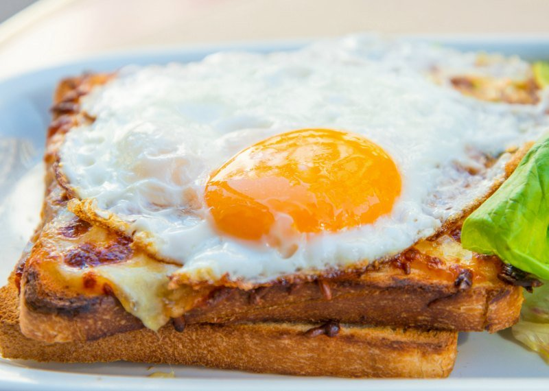
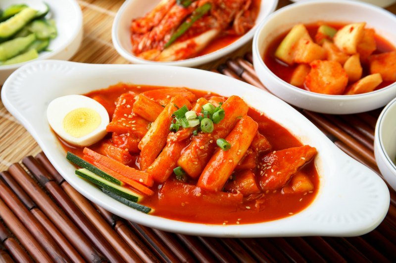
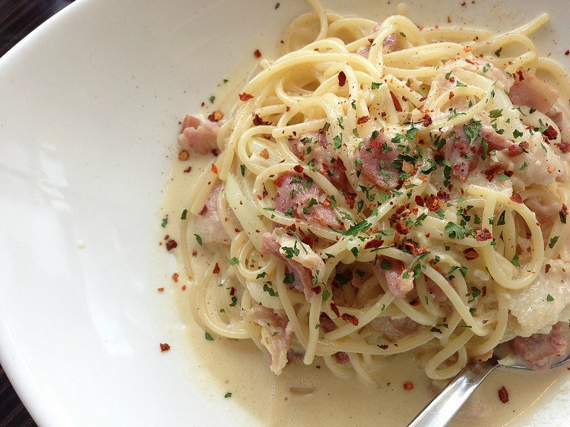
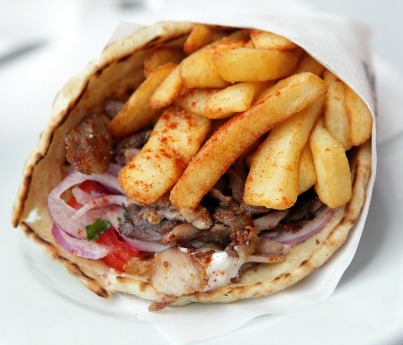
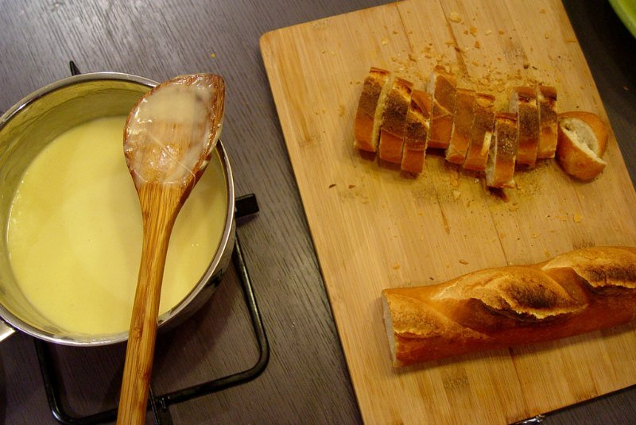
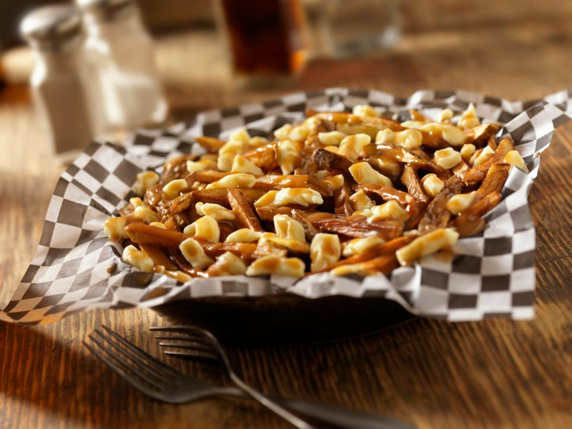
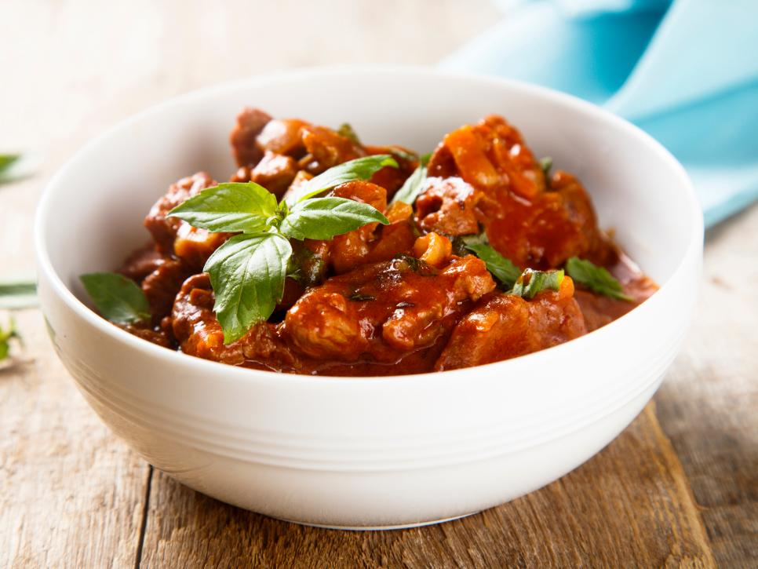
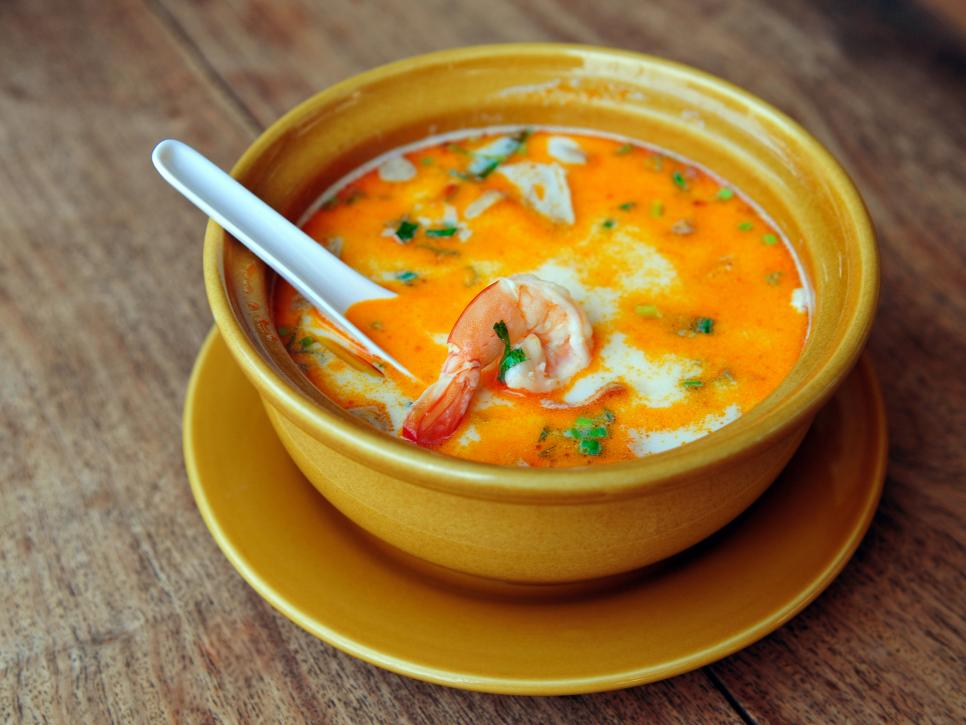
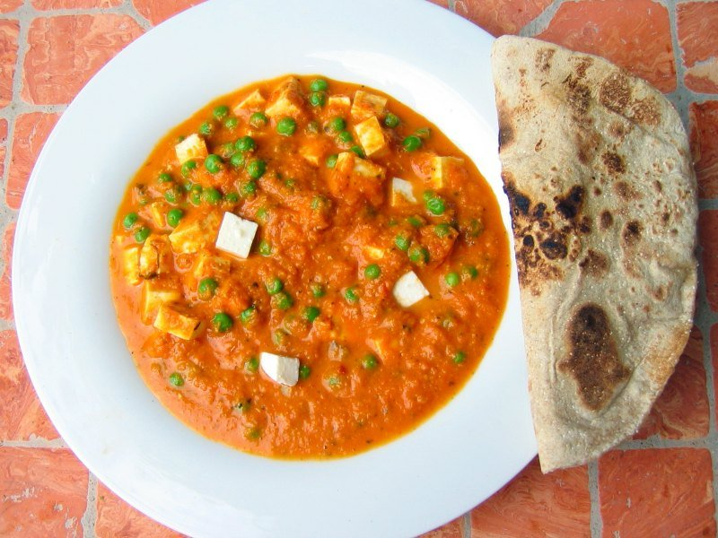

In this page, you will find 9 various foods that encompass the traditions and cultures of its origin. When you get a chance to visit these extraordinary places, make an effort to experience these wonderful dishes.
Croque Madame
France
A classic breakfast that you will find in any brasserie, it’s a great way to start your day. If you are tired of croissants and baguettes, a Croque Madame is a kind of fried egg and cheese sandwich, topped with grated cheese. If you eat this without the fried egg, the French call it a Croque Monsieur.
Kimchi
South Korea
If you’re keen on fermented vegetables and spicy food, this is the dish for you. The main ingredient of this Korean side dish is Chinese cabbage, which is also flavored with onions, garlic, and red pepper. You’ll find this dish in every Korean household.
Pasta Carbonara
Italy
This dish originated in Rome and is a pasta cooked with cream sauce, eggs, pancetta (a sliced bacon) and olive oil. It is usually served in a round dish and topped with Parmesan cheese. The most critical piece of making Carbonara is that the pasta should be boiled al dente.
Souvlaki
Greece
This Greek fast food is cheap and delicious. Made with beef, pork or chicken (as well as vegetables on occasion), this dish consists of kebabs on wooden skewers. The dish is either served on a plate with various garnishes, bread or fried potatoes, or in a pita sandwich.
Fondue
Switzerland
The ultimate communal dish, fondue is a dish of melted cheese served in a pot over heat. People dip bread into the cheese with long-stemmed forks. You may also find variations to the traditional cheese fondue - hot oil instead for a meat fondue, or melted chocolate for a tasty dipping dessert.
Poutine
Canada
Gravy, fries and cheese curds — what's not to love about poutine? Although this savory concoction is available in the U.S., you should try it while visiting Canada. Some restaurants have more than 100 variations to choose from, so there is something for everyone.
Goulash
Hungary
Goulash literally translates to "Herdsman" in Hungarian because they made the dish during cattle drives in harsh conditions. Although, the meaty stew didn't get its rich red color until Turks invaded and introduced paprika to the country during the 16th century. If you visit in September, check out the annual goulash festival held in Szolnok.
Tom Yum Soup
Thailand
Tom Yum translates to "sour/spicy soup" and is the most popular soup in Thailand. You can order it two different ways: with coconut milk (tom yum goong nam khon) or without (tom yum goong nam sy).
Paneer Butter Masala
India
Paneer is a type of fresh cheese common to the Indian subcontinent, and when paired with butter masala (a type of rich tomato gravy), it is the perfect combination of creaminess and spiciness. This dish is served with rice or tandoori roti (a type of flatbread).